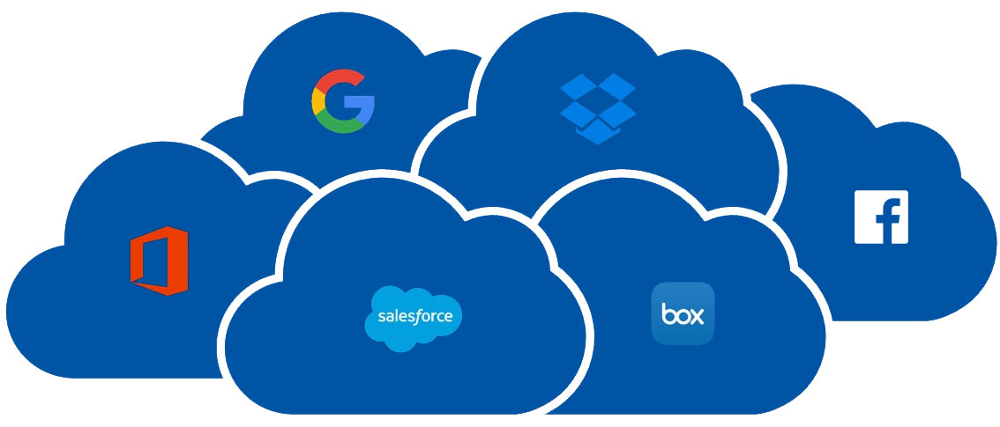
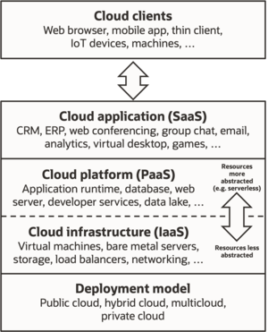

Characteristics
Cloud computing exhibits the following key characteristics:
- Agility for organizations may be improved, as cloud computing may increase users' flexibility with re-provisioning, adding, or expanding technological infrastructure resources.
- Cost reductions are claimed by cloud providers. A public-cloud delivery model converts capital expenditures (e.g., buying servers) to operational expenditure. This purportedly lowers barriers to entry, as infrastructure is typically provided by a third party and need not be purchased for one-time or infrequent intensive computing tasks. Pricing on a utility computing basis is "fine-grained", with usage-based billing options. As well, less in-house IT skills are required for implementation of projects that use cloud computing. The e-FISCAL project's state-of-the-art repository[54] contains several articles looking into cost aspects in more detail, most of them concluding that costs savings depend on the type of activities supported and the type of infrastructure available in-house.
- Device and location independence enable users to access systems using a web browser regardless of their location or what device they use (e.g., PC, mobile phone). As infrastructure is off-site (typically provided by a third-party) and accessed via the Internet, users can connect to it from anywhere.
- Maintenance of cloud environment is easier because the data is hosted on an outside server maintained by a provider without the need to invest in data center hardware. IT maintenance of cloud computing is managed and updated by the cloud provider's IT maintenance team which reduces cloud computing costs compared with on-premises data centers.

- Multitenancy enables sharing of resources and costs across a large pool of users thus allowing for:
- centralization of infrastructure in locations with lower costs (such as real estate, electricity, etc.)
- peak-load capacity increases (users need not engineer and pay for the resources and equipment to meet their highest possible load-levels)
- utilisation and efficiency improvements for systems that are often only 10–20% utilised.
- Performance is monitored by IT experts from the service provider, and consistent and loosely coupled architectures are constructed using web services as the system interface
- Productivity may be increased when multiple users can work on the same data simultaneously, rather than waiting for it to be saved and emailed. Time may be saved as information does not need to be re-entered when fields are matched, nor do users need to install application software upgrades to their computer.
- Availability improves with the use of multiple redundant sites, which makes well-designed cloud computing suitable for business continuity and disaster recovery.
- Scalability and elasticity via dynamic ("on-demand") provisioning of resources on a fine-grained, self-service basis in near real-time (Note, the VM startup time varies by VM type, location, OS and cloud providers, without users having to engineer for peak loads. This gives the ability to scale up when the usage need increases or down if resources are not being used. The time-efficient benefit of cloud scalability also means faster time to market, more business flexibility, and adaptability, as adding new resources does not take as much time as it used to.Emerging approaches for managing elasticity include the use of machine learning techniques to propose efficient elasticity models.
- Security can improve due to centralization of data, increased security-focused resources, etc., but concerns can persist about loss of control over certain sensitive data, and the lack of security for stored kernels. Security is often as good as or better than other traditional systems, in part because service providers are able to devote resources to solving security issues that many customers cannot afford to tackle or which they lack the technical skills to address.However, the complexity of security is greatly increased when data is distributed over a wider area or over a greater number of devices, as well as in multi-tenant systems shared by unrelated users. In addition, user access to security audit logs may be difficult or impossible. Private cloud installations are in part motivated by users' desire to retain control over the infrastructure and avoid losing control of information security
The National Institute of Standards and Technology's definition of cloud computing identifies "five essential characteristics":
On-demand self-service. A consumer can unilaterally provision computing capabilities, such as server time and network storage, as needed automatically without requiring human interaction with each service provider.
Broad network access. Capabilities are available over the network and accessed through standard mechanisms that promote use by heterogeneous thin or thick client platforms (e.g., mobile phones, tablets, laptops, and workstations).
Resource pooling. The provider's computing resources are pooled to serve multiple consumers using a multi-tenant model, with different physical and virtual resources dynamically assigned and reassigned according to consumer demand.
Rapid elasticity. Capabilities can be elastically provisioned and released, in some cases automatically, to scale rapidly outward and inward commensurate with demand. To the consumer, the capabilities available for provisioning often appear unlimited and can be appropriated in any quantity at any time.
Measured service. Cloud systems automatically control and optimize resource use by leveraging a metering capability at some level of abstraction appropriate to the type of service (e.g., storage, processing, bandwidth, and active user accounts). Resource usage can be monitored, controlled, and reported, providing transparency for both the provider and consumer of the utilized service.

Service models
Though service-oriented architecture advocates "Everything as a service" (with the acronyms EaaS or XaaS, or simply aas), cloud-computing providers offer their "services" according to different models, of which the three standard models per NIST are Infrastructure as a Service (IaaS), Platform as a Service (PaaS), and Software as a Service (SaaS). These models offer increasing abstraction; they are thus often portrayed as layers in a stack: infrastructure-, platform- and software-as-a-service, but these need not be related. For example, one can provide SaaS implemented on physical machines (bare metal), without using underlying PaaS or IaaS layers, and conversely one can run a program on IaaS and access it directly, without wrapping it as SaaS.
Infrastructure as a service (IaaS)
 ;Infrastructure as a service (IaaS) refers to online services that provide high-level APIs used to abstract various low-level details of underlying network infrastructure like physical computing resources, location, data partitioning, scaling, security, backup, etc. A hypervisor runs the virtual machines as guests. Pools of hypervisors within the cloud operational system can support large numbers of virtual machines and the ability to scale services up and down according to customers' varying requirements. Linux containers run in isolated partitions of a single Linux kernel running directly on the physical hardware. Linux cgroups and namespaces are the underlying Linux kernel technologies used to isolate, secure and manage the containers. Containerisation offers higher performance than virtualization because there is no hypervisor overhead. IaaS clouds often offer additional resources such as a virtual-machine disk-image library, raw block storage, file or object storage, firewalls, load balancers, IP addresses, virtual local area networks (VLANs), and software bundles.
The NIST's definition of cloud computing describes IaaS as "where the consumer is able to deploy and run arbitrary software, which can include operating systems and applications. The consumer does not manage or control the underlying cloud infrastructure but has control over operating systems, storage, and deployed applications; and possibly limited control of select networking components (e.g., host firewalls).
IaaS-cloud providers supply these resources on-demand from their large pools of equipment installed in data centers. For wide-area connectivity, customers can use either the Internet or carrier clouds (dedicated virtual private networks). To deploy their applications, cloud users install operating-system images and their application software on the cloud infrastructure. In this model, the cloud user patches and maintains the operating systems and the application software. Cloud providers typically bill IaaS services on a utility computing basis: cost reflects the number of resources allocated and consumed
Platform as a service (PaaS)
The capability provided to the consumer is to deploy onto the cloud infrastructure consumer-created or acquired applications created using programming languages, libraries, services, and tools supported by the provider. The consumer does not manage or control the underlying cloud infrastructure including network, servers, operating systems, or storage, but has control over the deployed applications and possibly configuration settings for the application-hosting environment.
PaaS vendors offer a development environment to application developers. The provider typically develops toolkit and standards for development and channels for distribution and payment. In the PaaS models, cloud providers deliver a computing platform, typically including an operating system, programming-language execution environment, database, and the web server. Application developers develop and run their software on a cloud platform instead of directly buying and managing the underlying hardware and software layers. With some PaaS, the underlying computer and storage resources scale automatically to match application demand so that the cloud user does not have to allocate resources manually.
Some integration and data management providers also use specialized applications of PaaS as delivery models for data. Examples include iPaaS (Integration Platform as a Service) and dPaaS (Data Platform as a Service). iPaaS enables customers to develop, execute and govern integration flows. Under the iPaaS integration model, customers drive the development and deployment of integrations without installing or managing any hardware or middleware. dPaaS delivers integration—and data-management—products as a fully managed service. Under the dPaaS model, the PaaS provider, not the customer, manages the development and execution of programs by building data applications for the customer. dPaaS users access data through data-visualization tools.

Software as a service (SaaS)
The capability provided to the consumer is to use the provider's applications running on a cloud infrastructure. The applications are accessible from various client devices through either a thin client interface, such as a web browser (e.g., web-based email), or a program interface. The consumer does not manage or control the underlying cloud infrastructure including network, servers, operating systems, storage, or even individual application capabilities, with the possible exception of limited user-specific application configuration settings.
In the software as a service (SaaS) model, users gain access to application software and databases. Cloud providers manage the infrastructure and platforms that run the applications. SaaS is sometimes referred to as "on-demand software" and is usually priced on a pay-per-use basis or using a subscription fee. In the SaaS model, cloud providers install and operate application software in the cloud and cloud users access the software from cloud clients. Cloud users do not manage the cloud infrastructure and platform where the application runs. This eliminates the need to install and run the application on the cloud user's own computers, which simplifies maintenance and support. Cloud applications differ from other applications in their scalability—which can be achieved by cloning tasks onto multiple virtual machines at run-time to meet changing work demand. Load balancers distribute the work over the set of virtual machines. This process is transparent to the cloud user, who sees only a single access-point. To accommodate a large number of cloud users, cloud applications can be multitenant, meaning that any machine may serve more than one cloud-user organization.
The pricing model for SaaS applications is typically a monthly or yearly flat fee per user, so prices become scalable and adjustable if users are added or removed at any point. It may also be free. Proponents claim that SaaS gives a business the potential to reduce IT operational costs by outsourcing hardware and software maintenance and support to the cloud provider. This enables the business to reallocate IT operations costs away from hardware/software spending and from personnel expenses, towards meeting other goals. In addition, with applications hosted centrally, updates can be released without the need for users to install new software. One drawback of SaaS comes with storing the users' data on the cloud provider's server. As a result,[citation needed] there could be unauthorized access to the data. Examples of applications offered as SaaS are games and productivity software like Google Docs and Word Online. SaaS applications may be integrated with cloud storage or File hosting services, which is the case with Google Docs being integrated with Google Drive and Word Online being integrated with Onedrive.
Deployment models
Private cloud

Private cloud is cloud infrastructure operated solely for a single organization, whether managed internally or by a third party, and hosted either internally or externally. Undertaking a private cloud project requires significant engagement to virtualize the business environment, and requires the organization to reevaluate decisions about existing resources. It can improve business, but every step in the project raises security issues that must be addressed to prevent serious vulnerabilities. Self-run data centers are generally capital intensive. They have a significant physical footprint, requiring allocations of space, hardware, and environmental controls. These assets have to be refreshed periodically, resulting in additional capital expenditures. They have attracted criticism because users "still have to buy, build, and manage them" and thus do not benefit from less hands-on management, essentially "[lacking] the economic model that makes cloud computing such an intriguing concept
Public cloud
Cloud services are considered "public" when they are delivered over the public Internet, and they may be offered as a paid subscription, or free of charge.[95] Architecturally, there are few differences between public- and private-cloud services, but security concerns increase substantially when services (applications, storage, and other resources) are shared by multiple customers. Most public-cloud providers offer direct-connection services that allow customers to securely link their legacy data centers to their cloud-resident applications.
Several factors like the functionality of the solutions, cost, integrational and organizational aspects as well as safety & security are influencing the decision of enterprises and organizations to choose a public cloud or on-premises solution.